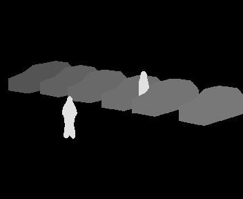

The camera view image
e.g. 02560.pgm.gz
This file is a (compressed) pgm image of the tracked objects (people and cars) rendered onto the camera view plane. The image illustrates the relative depths used by the system for occlusion handling. Each object is rendered by a greylevel between 0 and 255. For each tracked person there is a reference number or label. The greylevel used to render a person is related to the reference number using ...
greylevel = 128 + (ref_no & 127)Hence people will appear lighter than cars (with a greylevel > 127). To view an image use
'gunzip -c 00001.pgm.gz | xv -gamma 5 -'
The ascii data file
e.g. 02560.dat.gz(click here to see example file contents)
This file contains data for each tracked person in the image. Specifically, the file consists of a set of tags ...
- label n
- the reference number for this tracked person - wp_pos (xw,yw)
- the world plane coordinates of the person's feet  wp_cov xx xy yy
wp_cov xx xy yy
- the covariance matrix elements of the estimated world plane coordinates- image_origin (xi,yi)
- the image plane coordinates of the silhouette origin - image_width w
- image_height h
- control_points (x0,y0) (x1,y1) ... (x39,y39)
- the image plane coordinates of the spline control points that represent the silhouette shape